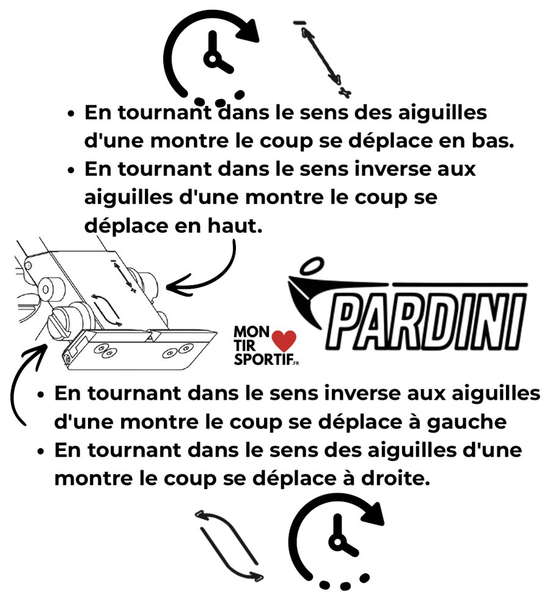
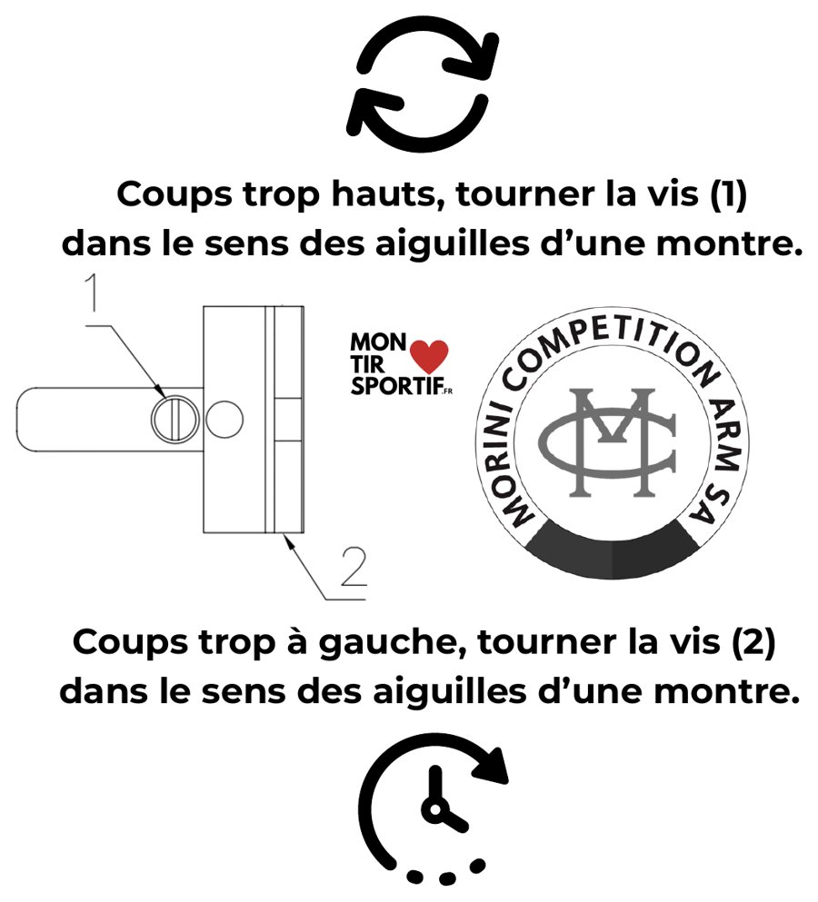
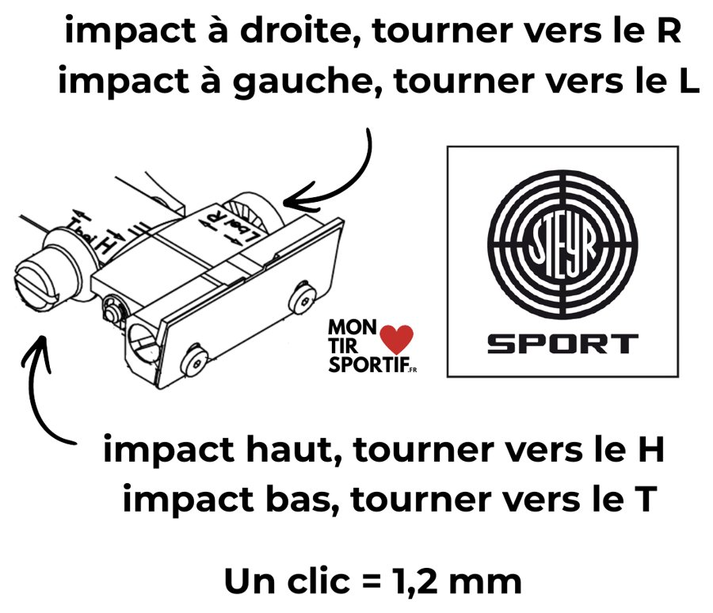
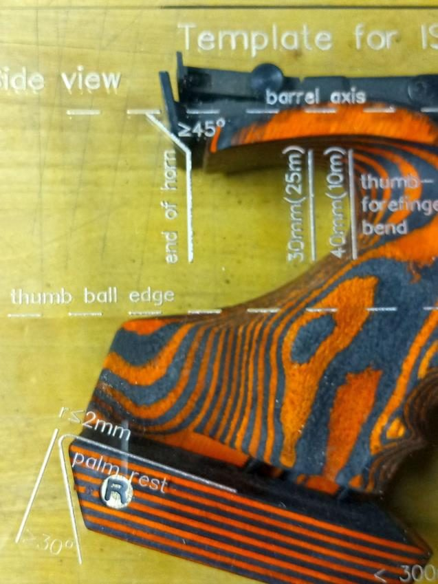

3Préparation matérielle
Choisir, régler et entretenir son pistolet et son équipement pour qu'ils travaillent pour vous.
Le pistolet 10 m
Le club prête généralement un pistolet à air comprimé de 10 m. Inutile d'acheter tout de suite : apprenez d'abord à connaître ce que vous aimez (taille de poignée, poids, sensation de détente).
- Air comprimé (PCP) : une cartouche d'air sous pression alimente l'arme. C'est la technologie la plus répandue aujourd'hui.
- Calibre 4,5 mm : on tire des plombs à tête plate (« wadcutter ») qui découpent un trou net dans la cible.
- Poids limité par le règlement ISSF (environ 1,5 kg maximum avec les accessoires), et un poids de départ minimal de la détente (500 g au 10 m).
Les plombs
Tous les plombs ne se valent pas. Un même pistolet groupe souvent mieux avec une marque ou un lot qu'avec un autre.
- Choisissez des plombs « match » de qualité, à tête plate.
- Une fois un bon lot trouvé, gardez-le pour les compétitions.
- Rangez-les dans leur boîte, à l'abri des chocs : un plomb déformé est un coup perdu.
Les réglages essentiels
Un pistolet de tir sportif se règle pour s'adapter au tireur. Règle d'or : un seul réglage à la fois, testé sur plusieurs séries, puis noté dans le carnet.
La poignée
Elle doit remplir la main sans forcer, avec le poignet dans l'axe du canon. Les poignées anatomiques se règlent (repose-paume) et se retouchent (ponçage, pâte à modeler).
La détente
On peut régler sa position (longueur, hauteur, angle) pour que la première phalange de l'index tombe naturellement dessus, ainsi que la bossette et le poids de départ (dans les limites du règlement).
Les organes de visée
Largeur du cran de mire et du guidon : un jour suffisant de chaque côté du guidon rend l'alignement plus facile à contrôler.
Régler la visée (le « zérotage »)
Quand votre groupement est serré mais décentré, ce n'est plus la technique : c'est le réglage. On agit sur le cran de mire grâce à ses deux vis (hauteur et direction).
- On déplace le cran de mire dans le sens où l'on veut déplacer les impacts : groupement trop bas → on monte le cran.
- On règle à partir d'un groupement de 5 coups au moins, jamais d'un coup isolé.
- On compte les « clics » et on les note dans son carnet.
Faire des clics pour régler son pistolet
La hausse (le cran de mire) se règle avec deux vis, une pour la hauteur et une pour la direction. Chaque cran de vis s'appelle un clic.
Faire des clics pour régler son arme
Comme une lampe de poche : on l'incline à peine, et le rond de lumière monte beaucoup sur un mur à 10 m. Un petit mouvement de la hausse déplace nettement l'impact sur la cible.
Comme le volume de la télé, ce sont des crans précis. Chaque clic déplace l'impact toujours de la même quantité : on sait à l'avance l'effet d'un réglage.
| Je tire… | Je fais des clics… |
|---|---|
| trop haut | vers le bas |
| trop bas | vers le haut |
| trop à droite | vers la gauche |
| trop à gauche | vers la droite |
Le réglage de la hausse selon la marque
Le sens des vis change d'une marque à l'autre. Repérez votre pistolet :
Pardini

- Hauteur : sens des aiguilles d'une montre, le coup descend ; sens inverse, il monte.
- Dérive : sens des aiguilles d'une montre, le coup va à droite ; sens inverse, à gauche.
Morini

- Coups trop hauts : tourner la vis (1) dans le sens des aiguilles d'une montre.
- Coups trop à gauche : tourner la vis (2) dans le sens des aiguilles d'une montre.
- Pour l'effet inverse, tournez dans l'autre sens.
Steyr

- Hauteur : vers H pour monter l'impact, vers T pour le descendre.
- Dérive : vers R pour déplacer l'impact à droite, vers L pour le déplacer à gauche.
- Un clic = 1,2 mm sur la cible.
Pour le « zéro de hausse » et la détente, voir Régler sa hausse et sa détente.
D'après l'article MonTirSportif : Réglage pistolet (clics) ↗
Les crosses
La crosse (ou poignée) est la seule partie de l'arme en contact avec la main : c'est elle qui détermine l'orientation du pistolet et la régularité de la prise. Une crosse bien adaptée fait apparaître la ligne de mire naturellement, dès qu'on chausse l'arme, sans forcer sur le poignet.
Les crosses anatomiques existent en plusieurs tailles et en version droitier ou gaucher. La main doit remplir la crosse sans être serrée.
Réglable en hauteur, il soutient la main et stabilise la prise. C'est souvent le premier réglage à faire.
Une crosse trop pentée oblige le poignet à se plier et peut provoquer des tendinites ; elle doit laisser le poignet dans l'axe du canon.
On retouche la crosse à sa main : ponçage, pâte ou résine pour combler les vides. Idéalement avec un entraîneur qualifié, par petites étapes.
Une crosse bien adaptée, c'est…
- Une ligne de mire alignée dès qu'on chausse l'arme, les yeux fermés puis ouverts.
- Un poignet verrouillé, dans l'axe du canon, sans tension.
- Des pressions qui s'exercent dans l'axe du canon, d'avant en arrière.
- La même prise, coup après coup, sans chercher sa place.
La règle ISSF depuis 2026
- La partie arrière de la crosse, sur le dessus de la main, est limitée à 40 mm au 10 m et 30 mm au 25 m.
- Elle doit former un angle d'au moins 45° avec l'axe du canon et ne pas envelopper la main.
- Le bout du repose-paume, côté poignet, est coupé en biais (au moins 30°).
- Si vous avez retouché votre crosse, faites-la vérifier avant la saison.
Crosses : les nouvelles règles ISSF 2026
Depuis le 1er janvier 2026, le règlement ISSF limite la forme des crosses de pistolet 10 m et 25 m. Le but : empêcher les crosses qui soutiennent trop la main par l'arrière ou qui l'enferment. Quatre points sont contrôlés.

L'arrière de la poignée
La partie arrière qui repose sur le dessus de la main, entre le pouce et l'index, est limitée à 40 mm au pistolet 10 m et 30 mm au pistolet 25 m. On mesure parallèlement au canon, du point où la crosse touche le dessus de la main jusqu'au point le plus profond de la poignée.
L'angle de l'arrière de la poignée
L'arrière de la poignée est coupé selon un angle d'au moins 45° par rapport à l'axe du canon. Une coupe « horizontale » est interdite.
La courbure arrière (courbure D)
Partant du point le plus profond de la poignée vers l'arrière, la courbure doit descendre par rapport à l'axe du canon. Elle ne peut ni remonter ni être parallèle au canon : la crosse ne doit pas envelopper la main.
L'appui paume
Son bord arrière, côté poignet, forme un angle d'au moins 30°. L'arête peut être arrondie avec un rayon de 2 mm au plus, pour éviter les blessures.
Récapitulatif
| Élément contrôlé | Règle 2026 |
|---|---|
| 1. Longueur de l'arrière de la poignée | ≤ 40 mm (10 m) · ≤ 30 mm (25 m) |
| 2. Angle de l'arrière de la poignée | ≥ 45° par rapport à l'axe du canon |
| 3. Courbure D | Strictement vers le bas |
| 4. Angle de l'arrière de l'appui paume | ≥ 30°, arête de rayon ≤ 2 mm |
Le contrôle par l'arbitre
Les arbitres vérifient la crosse avec un gabarit transparent ISSF 2026, posé de côté puis par l'arrière.



Lexique : les parties d'une crosse (anglais → français)
| Anglais | Français | À quoi ça correspond |
|---|---|---|
| Grip / Pistol grip | Crosse, poignée | L'ensemble qui permet la prise en main. |
| Rear part of the grip | Partie arrière de la crosse | La zone derrière la paume, concernée par la règle des 30 / 40 mm. |
| Deepest part of the grip | Point le plus profond de la poignée | Là où la paume s'enfonce le plus ; référence des mesures. |
| Centerline of bore / Barrel axis | Axe du canon | Ligne passant par le centre du canon ; référence des angles. |
| Horn | Bec, protubérance arrière | Extension à l'arrière de la crosse, au-dessus de l'appui paume (terme de fabricant). |
| Palm rest | Appui paume | Pièce réglable sous la crosse qui soutient la base de la main. |
| Thumb rest | Repose-pouce | Surface sur laquelle repose le pouce. |
| Thumb ball edge | Arête de la base du pouce | Contact de l'éminence thénar. |
| Finger grooves | Empreintes des doigts | Creux qui placent les doigts. |
| Backstrap | Dos de la crosse | Partie arrière verticale contre la paume. |
| Web of the hand | Fourche de la main | Zone entre le pouce et l'index où se loge la crosse. |
| Encircle the hand | Envelopper la main | Interdit par l'ISSF : la crosse ne doit pas enfermer la main. |
| Curvature | Courbure | Forme arrondie derrière le point le plus profond de la poignée. |
| Measuring box | Boîte de contrôle | Boîte des arbitres pour vérifier les dimensions du pistolet. |
Les fabricants et le règlement n'emploient pas toujours les mêmes mots : horn = rear part of the grip, grip cavity = deepest part of the grip, barrel axis = centre line of the barrel.
D'après le guide MonTirSportif « Conformité des crosses ISSF 2026 », établi sur le règlement ISSF 2026, chapitre 8 « Pistol rules ».
L'équipement du tireur
Pour bien voir
- Lunettes de tir : le verre peut être adapté par un opticien pour voir le guidon net à bout de bras. Le règlement ISSF interdit toute optique sur le pistolet, mais autorise les verres correcteurs sur les lunettes.
- Cache-œil translucide devant l'œil qui ne vise pas, pour garder les deux yeux ouverts sans crisper le visage.
- Visière ou œillère latérale pour couper les reflets et les distractions.
Pour être stable et protégé
- Chaussures plates et stables (le règlement ISSF encadre les chaussures des pistoliers : renseignez-vous avant d'en acheter).
- Vêtements souples qui ne gênent pas le bras tireur.
- Protections auditives : indispensables au 25 m et au 50 m, conseillées au 10 m. En savoir plus
- Protections oculaires : lunettes de tir à verres incassables, recommandées à toutes les distances. En savoir plus
- Mallette rigide pour transporter l'arme en sécurité.
Les filtres de couleur
Un filtre coloré se place sur la monture de tir, devant l'œil qui vise. Il ne rend pas la vue meilleure, mais il adapte l'image à la lumière du stand : plus de contraste, moins d'éblouissement, moins de reflets. Le but au pistolet reste le même : un guidon net et bien lisible dans le cran de mire.
Stand couvert bien éclairé : aucune modification des couleurs. La base, avec un traitement antireflet.
Éclaircit l'image et renforce les contrastes quand la lumière est faible ou le temps gris.
Contraste encore plus marqué : fait ressortir le noir du visuel sur le blanc de la cible.
Réduit la luminosité sans changer les couleurs : pour le plein soleil en extérieur, au 25 m ou au 50 m.
Atténue la lumière forte tout en gardant de bons contrastes : un compromis pour l'extérieur.
Coupe les reflets sur les surfaces brillantes : guidon, canon, sols et cibles éclairées.
Bien choisir
- Faites faire un verre correcteur incolore avec antireflet, puis ajoutez un jeu de filtres à changer selon l'éclairage.
- Chacun perçoit les couleurs différemment : testez plusieurs filtres à l'entraînement, sur votre stand.
- Notez dans votre carnet le filtre retenu pour chaque stand et chaque lumière (salle, extérieur, soleil, temps couvert).
À savoir
- Le règlement ISSF autorise les filtres et les verres sur les lunettes, mais aucune optique sur le pistolet.
- Ne changez jamais de filtre le jour d'une compétition sans l'avoir essayé avant.
- Un opticien spécialisé dans le tir peut vous conseiller sur la combinaison verre, filtre et iris.
Les longues-vues
Au 25 m et au 50 m sur cibles papier, on ne voit pas ses impacts à l'œil nu : la longue-vue permet de lire chaque coup sans quitter son poste. Au 10 m, la cible revient au tireur grâce au rameneur ; avec une cible électronique, l'impact s'affiche sur l'écran et la longue-vue devient inutile.
Un zoom d'environ 20 à 60 fois couvre la plupart des besoins. Au 25 m, un grossissement moyen suffit ; au 50 m, il faut monter plus haut pour distinguer un trou de .22.
Le diamètre de la lentille avant (souvent 60 à 80 mm) fait entrer la lumière : plus il est grand, plus l'image reste claire dans un stand sombre ou par temps gris.
L'oculaire coudé (à 45°) est plus confortable posé sur la table ; l'oculaire droit vise plus vite la cible. Choisissez selon la hauteur de votre table de tir.
Un trépied de table ou un support réglable : la longue-vue doit rester stable et se régler à hauteur d'œil.
Bien l'installer
- Placez-la de façon à regarder sans déplacer vos pieds : votre position reste intacte entre deux coups.
- Faites la mise au point sur votre cible pendant la préparation, avant le début du match.
- Au 50 m, par forte chaleur, l'air qui « ondule » (le mirage) brouille l'image : réduisez un peu le grossissement.
Bien s'en servir
- Annoncez votre coup avant de regarder dans la longue-vue : elle sert à vérifier l'annonce, pas à la remplacer.
- Ne regardez pas chaque impact si cela vous fait penser au score : contentez-vous de vérifier le groupement à la fin d'une série.
- Protégez les lentilles (bouchons, housse) et nettoyez-les avec un chiffon pour optique.
Les chaussures de tir
Au pistolet, seuls les pieds touchent le sol : la chaussure est la base de toute la position. On cherche des appuis stables, plats et toujours identiques, pour que le corps oscille le moins possible.
Basses, semelle plate et ferme, conçues pour le règlement : le choix le plus simple pour la compétition.
Très utilisées par les pistoliers pour leur stabilité, autour de 100 €. Vérifiez qu'elles respectent le règlement (hauteur et souplesse de la semelle avant).
Pour commencer ou s'entraîner : une chaussure sans talon, plate et stable, abordable.
Les chaussures de course : leur semelle épaisse et amortissante rend les appuis instables. Les sandales sont interdites.
Ce que dit le règlement ISSF
- Seules les chaussures basses sont autorisées : elles ne doivent pas couvrir les malléoles (les os de la cheville).
- La semelle doit rester souple sous toute la partie avant du pied, y compris les semelles intérieures amovibles.
- Interdit d'enlever ses chaussures pendant la compétition.
- Les chaussures des pistoliers sont contrôlées au pas de tir.
Nos conseils
- Gardez toujours la même paire pour vous entraîner et concourir : vos repères de position en dépendent.
- « Rodez » une nouvelle paire plusieurs semaines avant une compétition.
- Réservez-les au stand : elles s'usent moins et gardent une semelle propre et régulière.
- Pensez-y dans le sac de tir, avec la check-list.
Ciblerie papier et ciblerie électronique
Au pistolet, on tire sur deux types de cibles : le traditionnel carton, que l'on compte à la main, et la cible électronique, qui affiche chaque impact sur un écran. Les deux ont leur place, à l'entraînement comme en compétition.
La ciblerie papier
Peu coûteuse, disponible partout, idéale pour les exercices (cible blanche, visuel troué, 4 coins…).
Manipulation des cartons, comptage manuel, matchs plus longs (1 h 30 pour 60 coups au 10 m).
Besoin de cartons ? Imprimer des cibles sur montirsportif.com ↗
La ciblerie électronique
- L'impact s'affiche instantanément sur un écran, avec sa valeur et sa position.
- Comptage au dixième possible (utilisé en finale) et calculs automatiques : plus d'erreur de comptage.
- Statistiques : groupement, moyenne, temps entre les coups, historique des séances.
- De nombreuses applications d'entraînement : jeux, défis et exercices guidés, organisés en progression pédagogique, pour travailler chaque point technique pas à pas et rendre la séance plus motivante.
- Les essais et le match sont gérés par le système ; en cas de panne, le tireur change de poste avec du temps supplémentaire.
Plus de rameneur ni de longue-vue, matchs plus courts (1 h 15 pour 60 coups au 10 m), analyse précise de chaque série, et des applications d'entraînement pour progresser étape par étape.
Coût d'équipement pour le club ; la tentation de regarder chaque impact et de calculer son score.
Notre partenaire Sport Quantum ↗ conçoit des cibles électroniques pour le 10 m (SQ Air) et les armes à feu (SQ Fire).
Imprimer ses cibles d'entraînement
Cibles 10 m 17 × 17, 5 cibles 10 m, vitesse olympique, Rink et SCATT, de 2 à 25 m, et le calculateur de hauteur de cible.
S'entraîner sur cible électronique SQ Air
Carton blanc, rond noir, bandes, entrée en cible, contrats et jeux : tous les exercices de notre partenaire Sport Quantum.
À voir aussi sur bensport
Entretien et sac de tir
L'entretien courant
Checklist du sac de tir
L'air comprimé en toute sécurité
Remplir sa cartouche
- Choisir l'adaptateur entre la cartouche et la bouteille de remplissage, serrer à la main et vérifier le montage.
- Ouvrir doucement la vanne, attendre quelques instants, puis refermer.
- Retirer la cartouche et vérifier son niveau.
- Signaler quand la bouteille ne délivre plus assez de pression.
Précautions
- Le remplissage se fait dans une zone sécurisée, sous le contrôle de l'entraîneur.
- La bouteille (200 bars) est fixée au mur ou au sol ; on se tient derrière elle. En cas d'incident, elle peut causer de gros dégâts.
- Une cartouche d'air a une durée de validité (10 ans) : surveillez la date inscrite dessus.
Entretien de l'arme à air
- Un coup de chiffon sec sur les parties métalliques à la fin de chaque séance.
- Le canon s'encrasse : nettoyez-le environ tous les 100 coups avec un feutre de nettoyage sec.
- Surveillez l'état des joints, et faites contrôler l'arme par un armurier avant les grands rendez-vous.
Fiche bensport : Le guide du pistolier ↗
Régler sa hausse et sa détente
La hausse
- Partir d'un groupement de 5 coups tirés avec sa meilleure technique (en appui si besoin), le plus serré possible.
- Le canon suit l'orientation de la hausse : pour tirer plus bas, baisser la hausse ; pour tirer plus à gauche, la déplacer vers la gauche.
- Le réglage peut varier d'un stand à l'autre selon l'éclairage.
Le « zéro de hausse »
Une fois l'arme réglée, notez combien de clics il faut pour ramener la hausse en butée (en hauteur et en latéral). Avec une arme de club partagée, vous retrouvez votre réglage en moins de 2 minutes, sans gaspiller de munitions. Utilisez de bons outils pour ne pas abîmer les vis.
La détente de match
Le poids de départ = poids de précourse + poids d'accrochage. On règle d'abord l'accrochage, puis on complète avec la précourse pour atteindre le minimum réglementaire.
| Arme | Poids de départ minimum |
|---|---|
| Pistolet 10 m (air) | 500 g |
| Pistolets 25 m | 1 000 g |
| 500 · Pistolet 50 m | Libre |
Fiche bensport : Le guide du pistolier ↗
La mécanique de détente, pas à pas
Le poids total de la détente est la somme de la pré-course et du point dur : par exemple 260 g + 260 g = 520 g. La petite marge au-dessus du minimum évite d’échouer au contrôle. Mesurez avec un peson étalonné, ou une base de 200 g et des disques de 10 à 500 g, en vérifiant séparément pré-course et point dur.
Préparer
Desserrez la vis de trigger stop pour ne pas fausser les mesures. Canon dirigé vers les cibles, personne dans la zone.
Régler la pré-course
Avec la vis du ressort de première étape : la détente doit céder à la charge visée (par exemple 260 g), pas en dessous.
Régler le point dur
Avec la vis du ressort de point dur, jusqu’au poids total visé (par exemple 520 g).
Régler le décrochage
Vissez la vis d’accrochage jusqu’au départ spontané, puis desserrez d’un quart de tour (parfois un huitième). Les réglages étant liés, revérifiez ensuite pré-course et point dur.
Régler le trigger stop
Une course après le départ la plus faible possible, mais jamais nulle.
Valider
Un long tir à sec, puis un tir réel, pour confirmer que le départ est reproductible.
Source : montirsportif.com/mecanique-de-detente-et-reglages-des-armes-de-tir-sportif ↗
Entretenir et transporter une arme à feu
Le nettoyage
Les émanations de poudre, de plomb et de produits de nettoyage sont nocives : travaillez dans un local aéré, avec un masque.
- Courant : démontage partiel, spray lubrifiant anticorrosion, brossage, un passage de cordon de nettoyage dans le canon, une goutte d'huile sur les parties en glissement.
- En profondeur : trempage de la carcasse et du canon, brossage, séchage, puis nettoyage et lubrification des hausses réglables.
- Passez la baguette dans le sens de sortie de la balle pour préserver la bouche du canon.
- Avant une compétition, nettoyez avant le dernier entraînement, pour vérifier le bon fonctionnement et vos réglages.
Le transport
- Arme dans une mallette, partiellement démontée ou munie d'un dispositif de sécurité.
- Munitions dans une boîte séparée.
- Emportez votre pièce d'identité, votre licence et les autorisations de détention, ainsi que votre convocation à la compétition.
Fiche bensport : Le guide du pistolier ↗
Les protections auditives
Même à 10 m, le stand est bruyant ; à 25 et 50 m, la protection est indispensable. Trois grandes familles existent.
Les casques
- Passifs : uniquement des matériaux isolants. Fiables, sans pile, souvent moins chers, très efficaces contre les gros calibres (par exemple 3M Peltor Optime III, Bull's Eye). Revers : ils coupent aussi les voix et les commandements.
- Électroniques (actifs) : des micros amplifient les sons faibles (voix) et coupent les sons forts (détonations). On entend les consignes sans retirer le casque. Plus chers, ils demandent des piles (3M Peltor SportTac, Sordin Supreme Pro-X, Walker's Razor…).
Les bouchons
- Mousse ou silicone : simples, légers, ne gênent pas l'appui de la joue. Protection inégale s'ils sont mal insérés, et on entend mal.
- À filtres : laissent passer l'air et les sons ambiants, mais bloquent l'onde de choc du tir.
- Électroniques : fonctionnent comme une aide auditive ; appréciés l'été pour éviter la chaleur d'un casque.
Le sur-mesure
- Réalisé par un audioprothésiste à partir d'une empreinte de l'oreille.
- Confort, étanchéité parfaite, plusieurs années de durée de vie ; version passive à filtres ou électronique.
- Investissement de départ élevé (souvent plus de 150 €).
Les protections oculaires
On n’a que deux yeux, et le tireur en a besoin. Au 25 m et au 50 m, une douille éjectée, un éclat de balle ou un retour de projectile sur une structure du stand peuvent atteindre le visage. Au 10 m aussi, un plomb peut ricocher. Des lunettes de tir protègent de ces petits accidents, rares mais aux conséquences graves.
Les lunettes de protection
- Verres incassables en polycarbonate, conformes à la norme EN 166 (marquage sur la monture).
- Légères et bon marché : idéales pour débuter, pour les invités du club ou par-dessus des lunettes de vue (modèles « sur-lunettes »).
Les lunettes de tir
- Monture réglable (Knobloch, Champion, Gehmann, Varga…) : le verre se place bien en face de l’œil directeur, quelle que soit la position de la tête.
- Accueillent un verre correcteur, un filtre de couleur, un iris réglable et un cache pour l’œil non directeur.
Les lunettes de vue
- Elles ne protègent pas toujours : demandez à votre opticien si les verres sont résistants aux chocs.
- Leur correction est faite pour voir loin, pas pour voir net le guidon : voir la vue du tireur.
Adapter sa crosse
Pourquoi adapter ?
Pour gagner en efficacité : en position normale, le tireur doit retrouver ses organes de visée (guidon dans le cran de mire) sans corriger son bras, sa main ou son poignet. Il ne doit jamais « chercher » le guidon.
Quelle taille choisir ?
Prenez une crosse à votre taille ou plus petite : il est bien plus simple d'enlever de la matière que d'en ajouter. Voir aussi les crosses et les règles ISSF 2026.
Pardini : réglage de la crosse (Grip Adjustment)
Adapter une crosse de pistolet
Entretenir son pistolet
Un entretien régulier garantit la fiabilité de l'arme et la constance des réglages. Voir aussi entretien et sac de tir.
L'entretien du pistolet
Les fabricants de pistolets
Les sites et chaînes vidéo officiels des fabricants : notices, réglages, pièces détachées et tutoriels.
À voir aussi sur bensport
La vue du tireur : les conseils d'un opticien
Matthieu, opticien spécialisé dans le sport (Envie d'optique), répond aux questions des tireurs.
Que voir net au tir ?
Ni la vision de loin, ni celle de près : c'est le guidon qui doit être net, à 10 comme à 50 m. La cible doit rester légèrement floue, mais pas trop, pour pouvoir prendre sa marge de blanc. Une cible trop nette fait forcer l'œil (fatigue, erreurs de visée, coups de doigt) ; des organes de visée trop nets gênent la marge de blanc.
Faire un verre de tir
- Apporter son ou ses armes, ses lunettes de tous les jours et de tir, son dernier bilan ou ordonnance, et la référence de ses verres.
- La mesure se fait au pas de tir, avec la cible de la discipline, l'éclairage réglementaire et son arme bien réglée.
- La correction est en général la même à 10 et 50 m ; certains pistoliers, souvent après 50 ans, ressentent une différence à 25 m (ligne de mire plus courte).
Le cache-œil
Il évite de fermer l'autre œil, ce qui fatigue et occupe le cerveau. Un bout de scotch sur le verre, un bandeau, un clip sur les lunettes ou un cache sur la monture de tir.
Les signes d'alerte
Yeux qui tirent, piquent ou rougissent ; au tir, des séries irrégulières, des coups de doigt, des douleurs musculaires, ou le besoin de fermer fortement l'iris. Un contrôle chez l'ophtalmologiste tous les 2-3 ans est conseillé, et un fond d'œil tous les 5 ans après 40 ans. Un verre réservé au loisir ne peut pas être remboursé.
Le mécanisme de détente et son réglage
Pré-course, point dur, décrochage, trigger stop : comprendre ce qui se passe dans la détente aide à mieux la régler… et à mieux lâcher. On parle de détente nette (le coup part franchement) ou filante (il part après un petit glissement). Charles Gomez (Ingénierie Concept Gomez) a conçu des platines de détente pédagogiques, pistolet et carabine, qui montrent tout le fonctionnement et permettent de tester les réglages sans crainte. Le poids de détente se contrôle avec un pèse-détente (peson) : en match, on utilise un peson calibré selon la discipline.
Les étapes de la queue de détente
Le mécanisme de détente
Le réglage de la détente
Platine : détente nette
Platine : détente filante
Les platines de détente pédagogiques ICG
La platine de détente ICG
Régler le poids de la course de décrochage
La pré-course
Régler la longueur de la course de décrochage
Régler le trigger stop
Le pèse-détente
Régler son pistolet et sa crosse : les vidéos des fabricants
Les détentes
Steyr LP5 / LP50 : régler la détente
Steyr LP2 : les réglages
Morini CM 200EI et CM 162 : réglages de la détente
Pardini K10 : la détente
Pardini K12 : la détente
Les crosses
Pardini : choisir la taille de sa crosse
Modifier sa crosse (1/3)
Modifier sa crosse (2/3)
Modifier sa crosse (3/3)
Présentation des crosses Smart Grip
Les crosses Smart Grip, conçues par Socrates Ioannidis, existent pour la plupart des pistolets 10 m (Steyr, Walther, Feinwerkbau, Tesro, Morini, Pardini, Matchgun, Snowpeak…).
Un pistolet 10 m pour débuter : le Snowpeak PP20
Le Snowpeak PP20 est un pistolet 10 m à air comprimé (PCP) à prix très abordable, souvent cité pour débuter ou équiper une école de tir.
Présentation du Snowpeak PP20 (Armurerie Tychon)
Le pistolet PCP PP20 de Snowpeak (TOM-Airgun)
Longue-vue, télescope et digiscopie
La longue-vue permet de voir chaque impact sans bouger. On la choisit selon le grossissement, l'encombrement et la luminosité, et on la pose sur un trépied au sol ou fixé à la tablette. La digiscopie (une caméra sur le télescope) affiche l'image sur un écran.
Cours sur les longues-vues
Cours sur le télescope (Cassegrain)
Une caméra sur un télescope : la digiscopie
Plombs et cartouches .22 LR
Au 10 m, la qualité des plombs compte : la FFTir montre comment les tester. Au 25 et au 50 m, on tire en .22 Long Rifle.
Le test des plombs (FFTir)
La composition d'une munition
Lexique : la munition
Comment les balles sont fabriquées
La station de remplissage d'air comprimé
Pour remplir les cartouches des pistolets 10 m, le club utilise un compresseur et une bouteille tampon. À surveiller : les embouts adaptés à chaque marque de cartouche, la pression de la bouteille tampon, les robinets et manomètres, et côté compresseur le filtre à humidité, le niveau d'huile, le filtre à air, les soupapes de sécurité et le clapet anti-retour. Voir aussi l'air comprimé en toute sécurité.
Le sac et la valise du tireur
Ce qu'on emporte
Une valise avec la tenue et le trépied, et une sacoche pour le pas de tir : gant, plombs ou munitions, visière, stylo, cache-œil, bouchons d'oreille…
Transporter ses armes
- Chaque arme dans sa valise, rendue inutilisable (démontée ou verrou de pontet).
- Armes de catégorie B dans une boîte fermée par un cadenas.
- Chargeurs et munitions dans des compartiments à part.
- Le tout dans le coffre, rien dans l'habitacle.
Voir aussi le transport de l'arme et la liste d'avant-match.
Cibleries et équipements de stand
Rameneurs manuels ou électriques, porte-cibles, potences, cibles pivotantes ou électroniques : il existe de nombreuses solutions pour équiper un stand.
Fabien présente GiroCible
Tir25m : la commande sans fil des cibles pivotantes
Sur les sites MonTirSportif
MonTirSportif – https://pistol.montirsportif.com/preparation-materielle.html